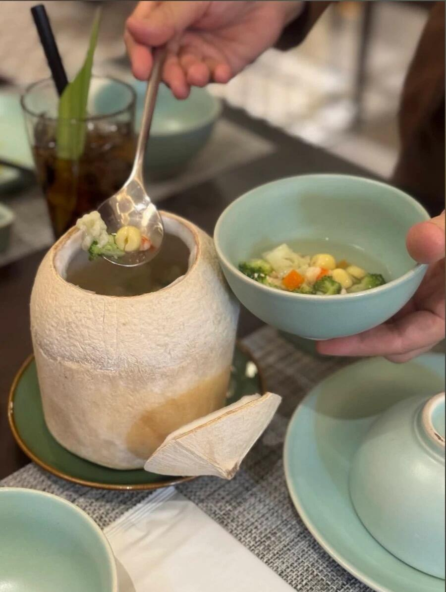
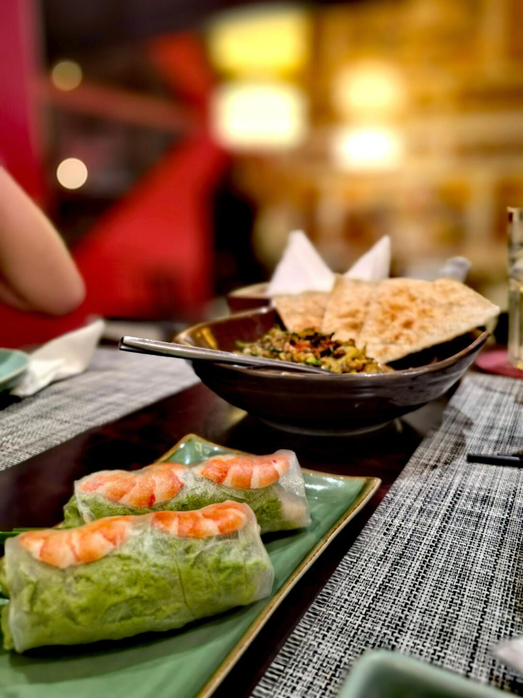
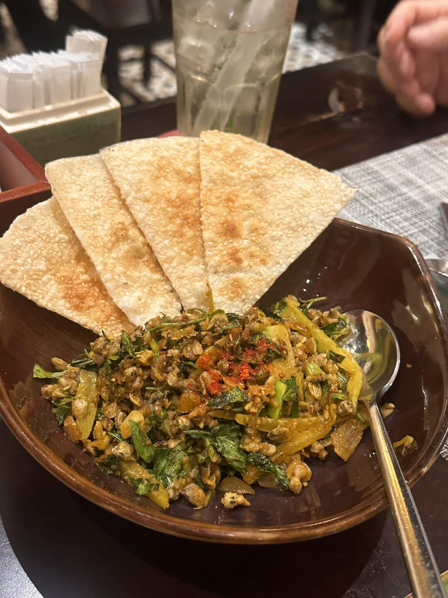
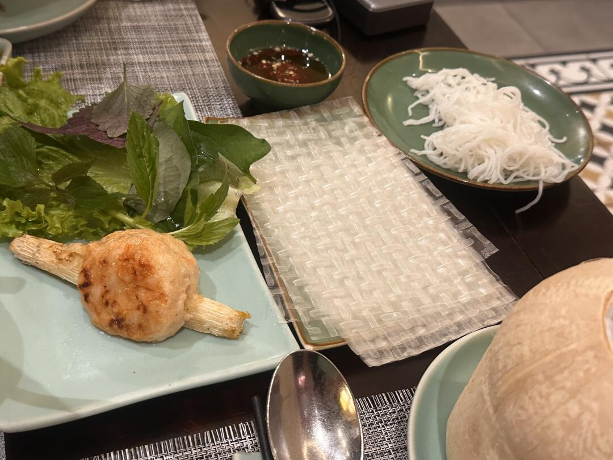
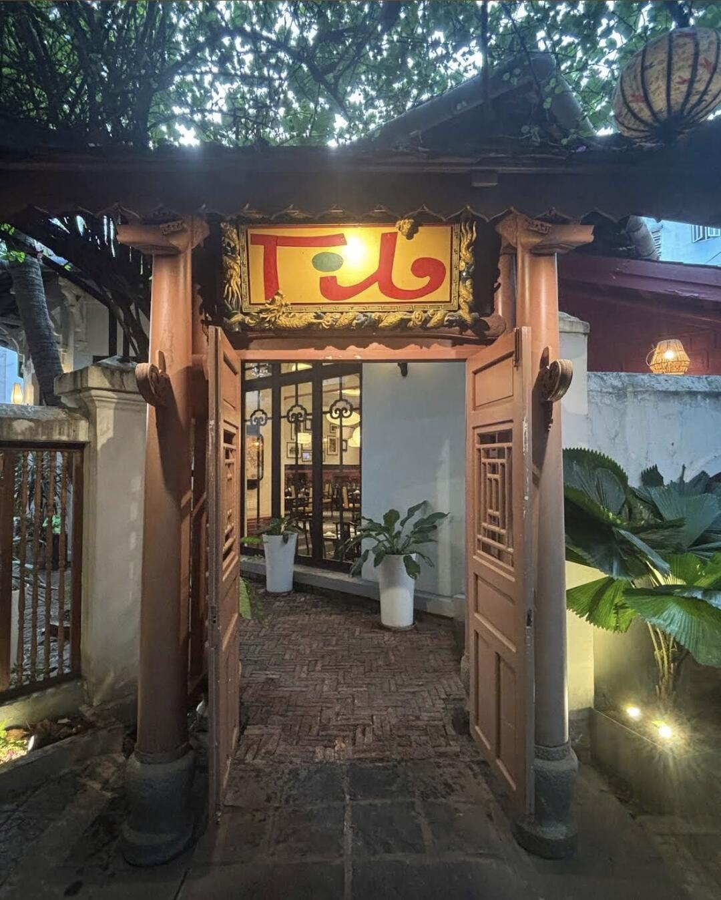
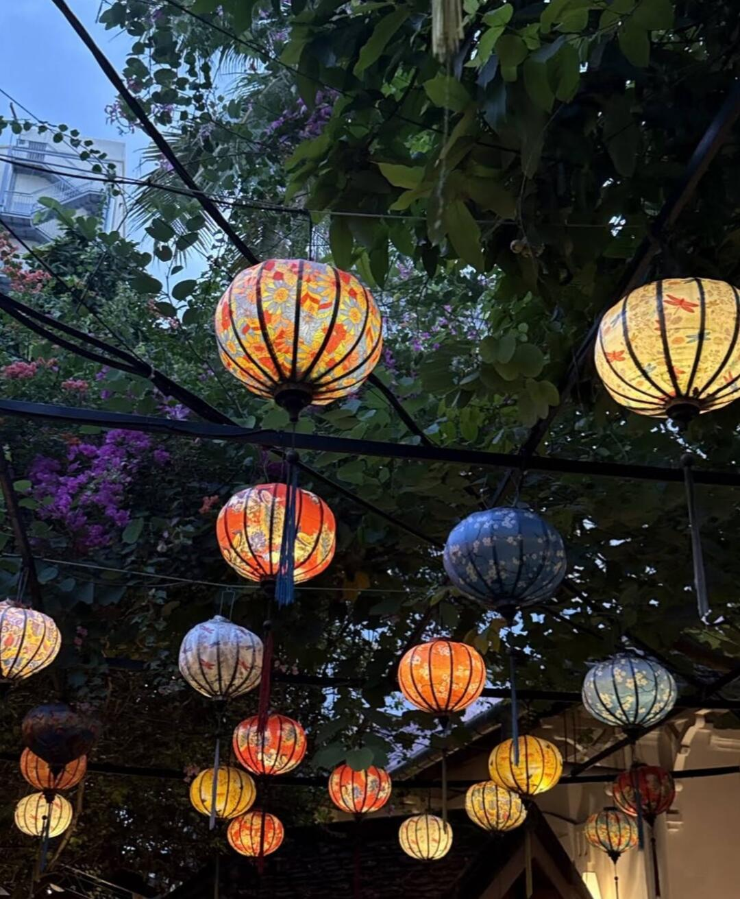
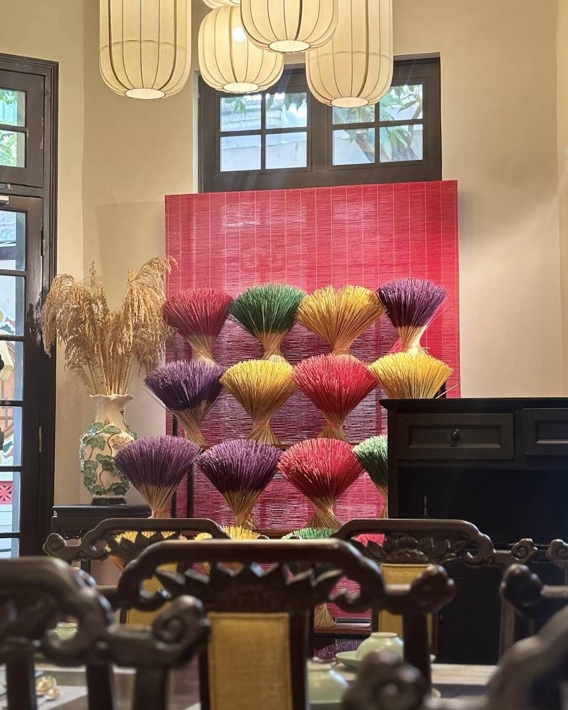
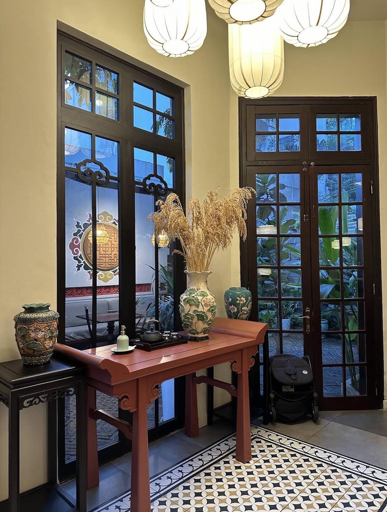
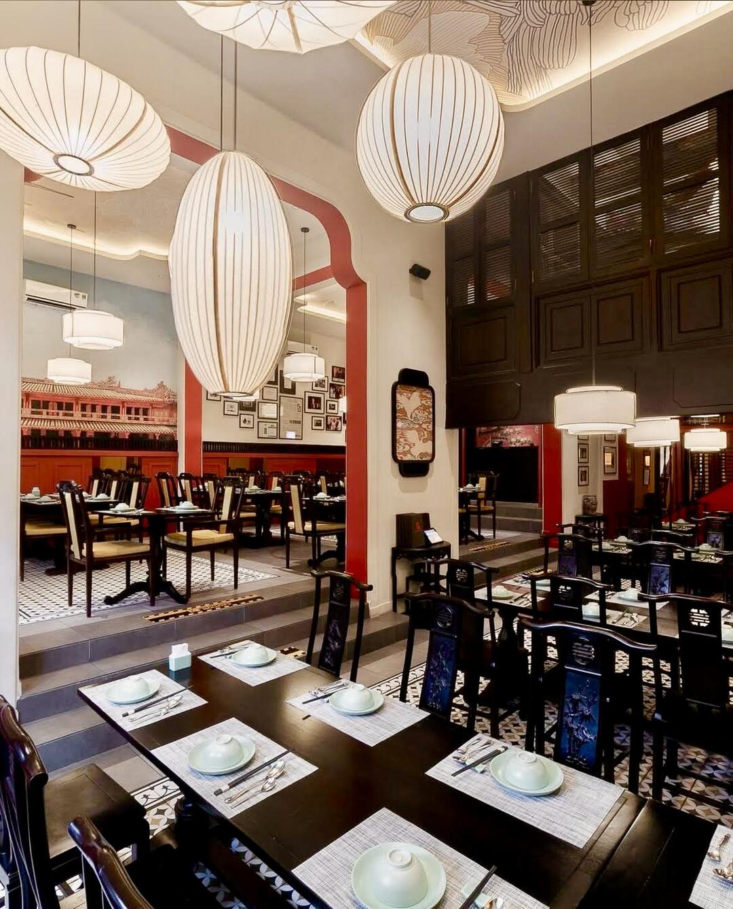

美食筆記 · 來自 Obsidian · 2026-10-19 擷取
順化菜老店｜Tib - Hue Restaurant

特色：1993 年開業的順化菜老店（30 多年），2006 年美國總統 George W. Bush 和澳洲總理 John Howard 曾在此用餐
環境：走過一條小道進去，紅色拱門、木質桌椅、花磚，順化風格細節滿滿，老餐廳的味道，拍照好看
評價：菜真的好吃、環境有越南特色；價格 85K–135K 不算貴，適合帶朋友吃有越南特色的餐廳
🍽️ 推薦菜色：
- Gỏi Mít Trộn Bánh Tráng Mè｜嫩波羅蜜沙拉配芝麻米餅｜125K — 芝麻米餅脆香，配沙拉一起吃口感豐富
- Gỏi Cuốn｜鮮蝦生春捲｜85K — 清爽，包蝦、米粉、蔬菜
- Chả Tôm｜順化蝦餅（甘蔗蝦）｜115K — 配米紙、米粉、香草自己捲著吃
- Súp Tib｜招牌椰子湯｜135K — 整顆新鮮椰子裝，雞肉、蝦仁、蓮子、蘑菇，清甜帶椰香
📍 Tib - Hue Restaurant — 187 Ter Hai Bà Trưng, Xuân Hòa
🕐 07:00–14:00、17:00–21:30 | ⭐ 4.3（956 評）| ☎ 0708 796 152
📸 實拍（共 9 張）








📌 資料來源：內容與全部 9 張照片來自小紅書實地帖文（Pebble 擷取至 Obsidian，2026-10-19）。
營業時間、價格與電話可能變動，出發前建議以現場或官方最新資訊為準。